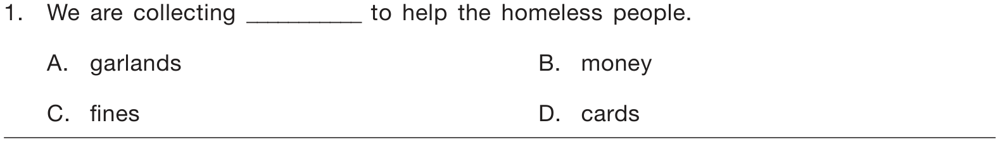
We are collecting ___________ to help the homeless people.
garlands
money
fines
cards
The suitable noun to be used is “money”, which means a medium of exchange (coins or notes) for various goods and services in an economy. It is used to help the homeless people in the sentence.
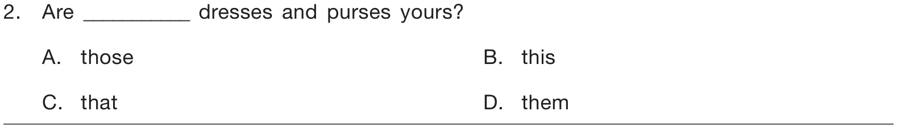
Are ___________ dresses and purses yours?
those
this
that
them
The suitable distributive pronoun to be used is “those”. It is used to talk about things (plural) that are far from us.
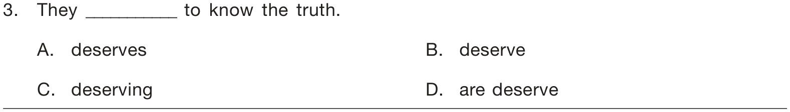
They ___________ to know the truth.
deserves
deserve
deserving
are deserve
The sentence is in simple present tense, and depending on the subject (they), the plural verb “deserve” is used.
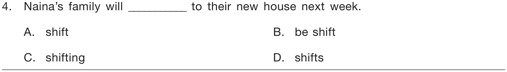
Naina’s family will ___________ to their new house next week.
shift
be shift
shifting
shifts
This sentence is in the simple future tense because it is used to represent an action that takes place in the future, as indicated by the phrase “next week” in the sentence, so the answer is “will shift”.
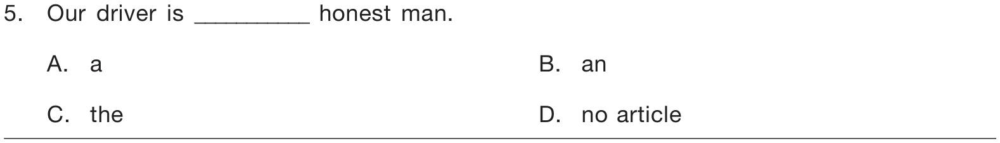
Our driver is ___________ honest man.
a
an
the
no article
The indefinite article “an” is used before the words that begin with a vowel sound, so the answer is “an honest man”.
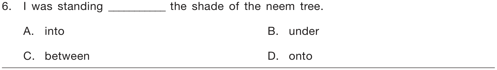
I was standing ___________ the shade of the neem tree.
into
under
between
onto
The preposition “under” is used to indicate the location of the subject (I) at a lower level than something else.
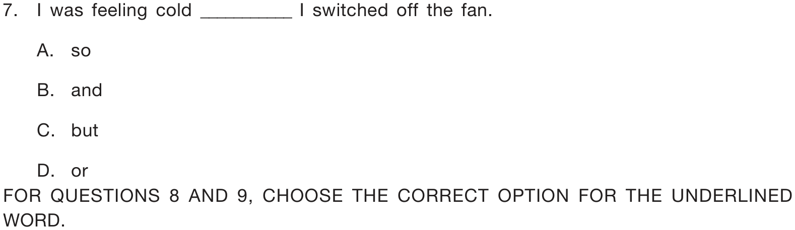
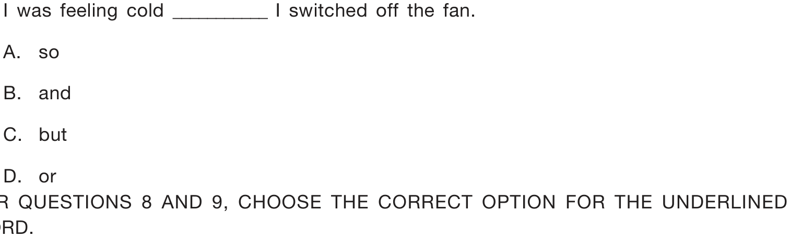
Option A
Option B
Option C
Option D
The conjunction “so” is used to connect two complete sentences and shows the result of something in the second sentence.
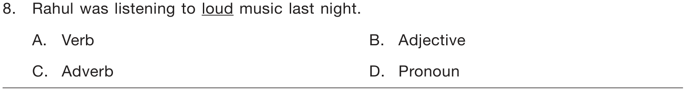
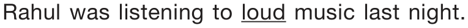
Verb
Adjective
Adverb
Pronoun
The word “loud” is an adjective. It is used to describe the sound of the music in the sentence.
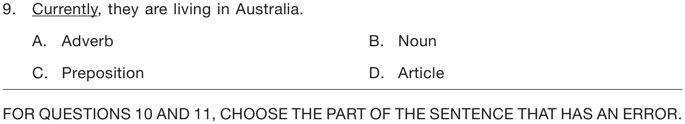
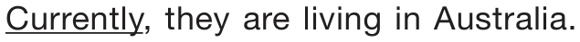
Adverb
Noun
Preposition
FOR QUESTIONS 10 AND 11, CHOOSE THE PART OF THE SENTENCE THAT HAS AN ERROR.
Article
The word “currently” is an adverb, which means “at present or at the moment”. It is used to modify the action of “living” in the sentence.
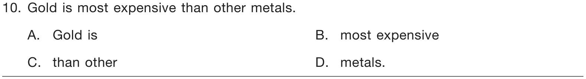
Gold is most expensive than other metals.
Gold is
most expensive
than other
metals.
The correct sentence is – Gold is more expensive than other metals.
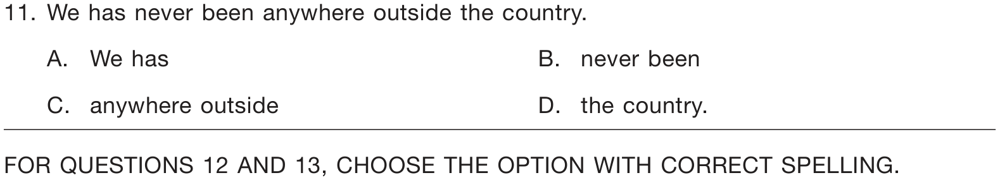
We has never been anywhere outside the country.
We has
never been
anywhere outside
FOR QUESTIONS 12 AND 13, CHOOSE THE OPTION WITH CORRECT SPELLING.
the country.
The correct sentence is – We have never been anywhere outside the country.
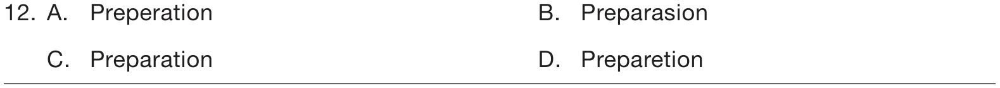
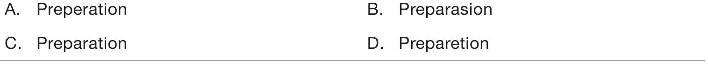
Option A
Option B
Option C
Option D
The correct spelling is “preparation”, which means “the process of getting something ready”.
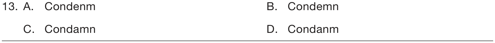
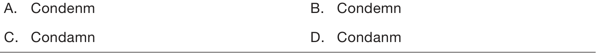
Option A
Option B
Option C
Option D
The correct spelling is “condemn”, which means “to criticise someone or something strongly.”
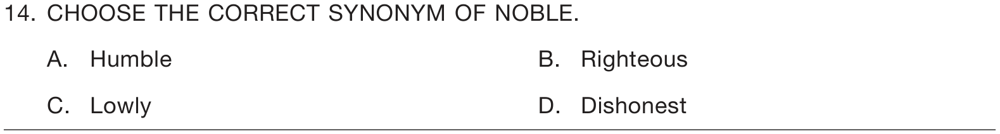
CHOOSE THE CORRECT SYNONYM OF NOBLE.
Humble
Righteous
Lowly
Dishonest
The synonym of the word “noble” is “righteous”, as they both mean “possessing fine qualities and principles that are right”.
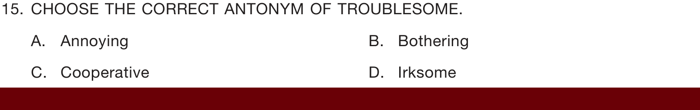
CHOOSE THE CORRECT ANTONYM OF TROUBLESOME.
Annoying
Bothering
Cooperative
Irksome
The antonym of the word “troublesome” is “cooperative”. The word “troublesome” means “someone or something that causes difficulty” while “cooperative” means “someone or something that is helpful”.
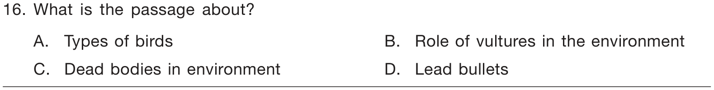
What is the passage about?
Types of birds
Role of vultures in the environment
Dead bodies in environment
Lead bullets
The passage is about “the role of vultures in the environment”.
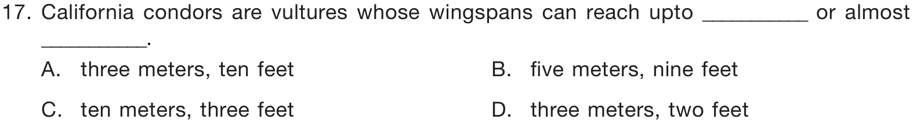
California condors are vultures whose wingspans can reach upto ___________ or almost ___________.
three meters, ten feet
five meters, nine feet
ten meters, three feet
three meters, two feet
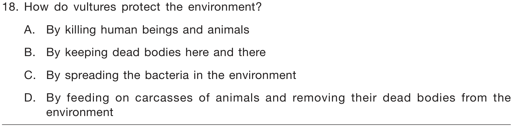
How do vultures protect the environment?
By killing human beings and animals
By keeping dead bodies here and there
By spreading the bacteria in the environment
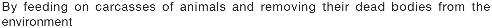
Vultures protect the environment by feeding on the carcasses of animals and removing their dead bodies from the environment.
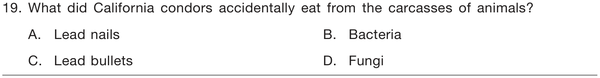
What did California condors accidentally eat from the carcasses of animals?
Lead nails
Bacteria
Lead bullets
Fungi
California condors accidentally ate “lead bullets” from the carcasses of animals.
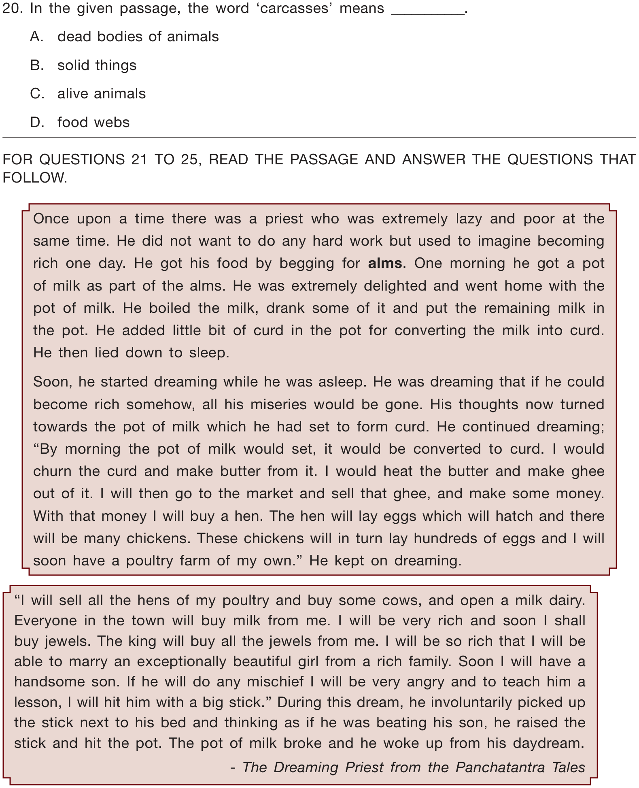
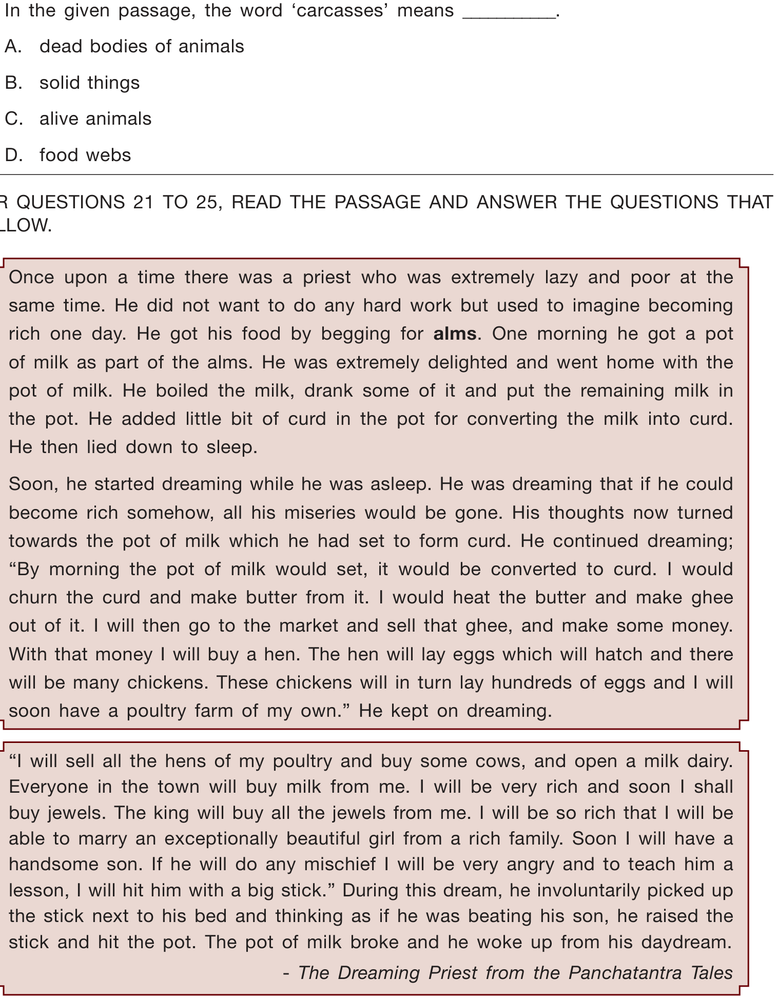
Option A
Option B
Option C
Option D
In the passage, the word “carcasses” means “dead bodies of animals”.
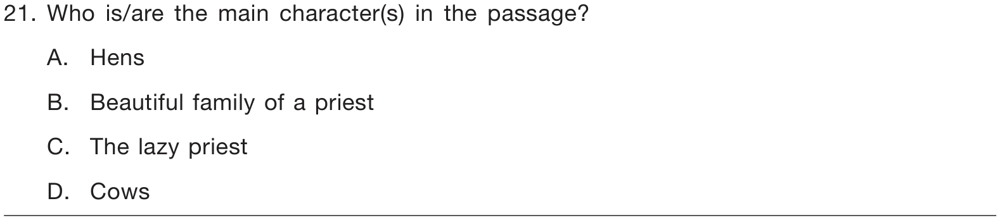
Who is/are the main character(s) in the passage?
Hens
Beautiful family of a priest
The lazy priest
Cows
The main character in the passage is “the lazy priest”.
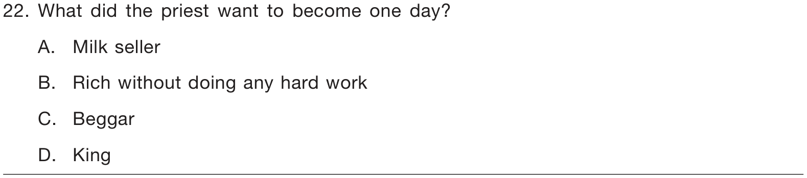
What did the priest want to become one day?
Milk seller
Rich without doing any hard work
Beggar
King
The priest wanted to become “rich one day without doing any hard work”.
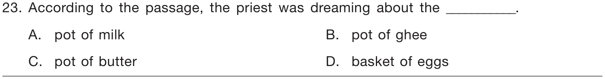
According to the passage, the priest was dreaming about the ___________.
pot of milk
pot of ghee
pot of butter
basket of eggs
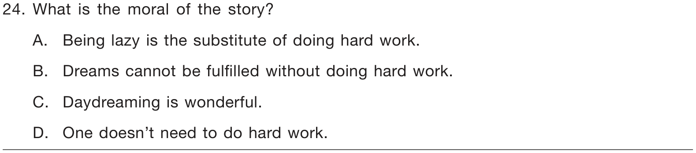
What is the moral of the story?
Being lazy is the substitute of doing hard work.
Dreams cannot be fulfilled without doing hard work.
Daydreaming is wonderful.
One doesn’t need to do hard work.
The moral of the story is: “Dreams cannot be fulfilled without doing any hard work”.
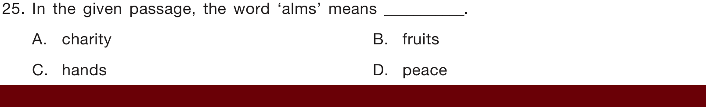
In the given passage, the word ‘alms’ means ___________.
charity
fruits
hands
peace
In the passage, the word “alms’ means “charity”.
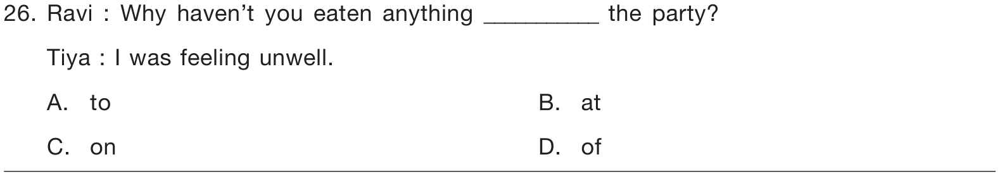
Ravi : Why haven’t you eaten anything ___________ the party?
Tiya : I was feeling unwell.
to
at
on
of
The suitable preposition to be used is “at”, which indicates the specific place in the sentence.
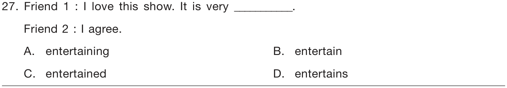
Friend 1 : I love this show. It is very ___________. Friend 2 : I agree.
entertaining
entertain
entertained
entertains
The suitable adjective to describe the show in the sentence is “entertaining”, which means “interesting or providing entertainment”. It is also indicated by the first part of the sentence.
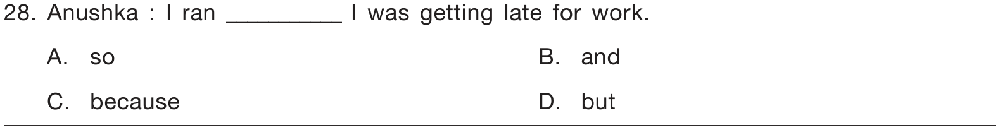
Anushka : I ran ___________ I was getting late for work.
so
and
because
but
The conjunction “because” is used to combine the two sentences, for it is used to give a reason for something.
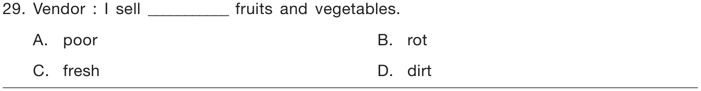
Vendor : I sell ___________ fruits and vegetables.
poor
rot
fresh
dirt
The suitable adjective to describe the quality of fruits and vegetables in the sentence is “fresh”.
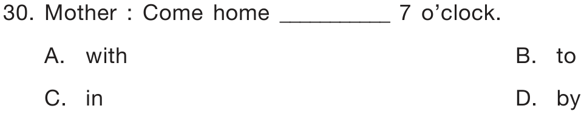
Mother : Come home ___________ 7 o’clock.
with
to
in
by
The suitable preposition to be used is “by”, which means “not later than” in the sentence. It is used to indicate a deadline in the sentence.
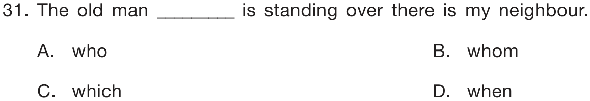
The old man _________ is standing over there is my neighbour.
who
whom
which
when
The relative pronoun “who” is used to point to the subject (the old man) mentioned in the sentence.
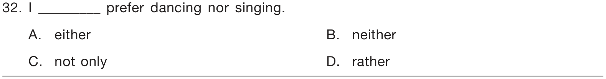
I _________ prefer dancing nor singing.
either
neither
not only
rather
The correlative conjunction “neither” is used with “nor” in the sentence. It is used to connect two or more negative choices.
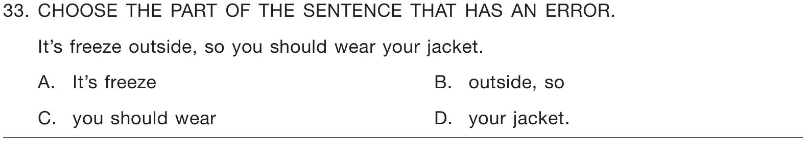
CHOOSE THE PART OF THE SENTENCE THAT HAS AN ERROR. It’s freeze outside, so you should wear your jacket.
It’s freeze
outside, so
you should wear
your jacket.
The correct sentence is – It’s freezing outside, so you should wear your jacket.
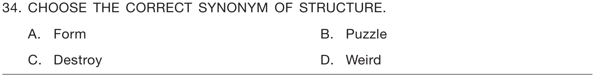
CHOOSE THE CORRECT SYNONYM OF STRUCTURE.
Form
Puzzle
Destroy
Weird
The synonym of the word “structure’ is “form”, as they both mean “the external appearance of somebody or something”.
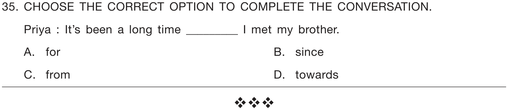
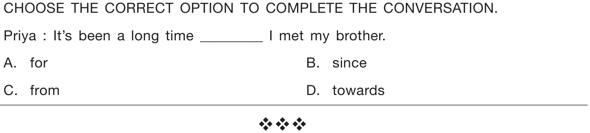
Option A
Option B
Option C
Option D
The conjunction “since” is used to connect the two sentences where an event that occurred at a certain point in time is mentioned.